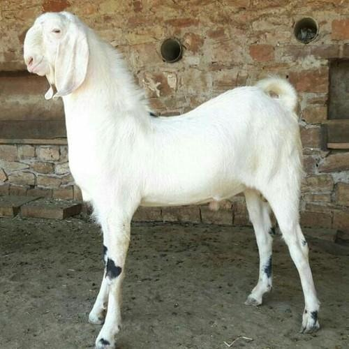
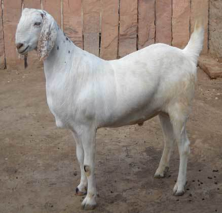
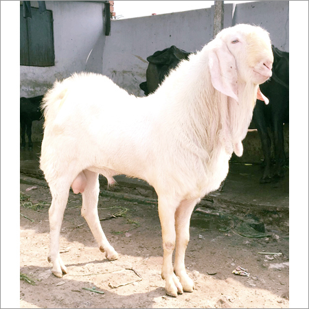

Sojat Goats
Sojat goats are a large, dual-purpose breed from the Rajasthan region of India, primarily white in color with a long, drooping ears, and a calm temperament. They are highly valued for both their meat quality and for breeding, with some varieties having brown or black patches and the majority lacking horns. Sojat goat farming is considered profitable and adaptable to various climates.
Characteristics:
- Appearance: Primarily white, with some having brown or black patches. They are large-sized with long, flat, and drooping ears. The majority lack horns.
- Temperament: Calm and docile.
- Purpose: Dual-purpose (meat and milk).
- Weight: Adult weight can range from 40 to 60 kg for females and 50 to 60 kg for males, but can reach up to 250 kg in some cases.
- Milk Yield: Produces an average of 1.0 to 1.5 kg of milk per day.
- Adaptability: Tolerant to a wide range of climates and requires low maintenance.

For More information:-
My YouTube channel(यूट्यूब चैनल):- Click Here
Facebook page (फेसबुक पेज):- Click Here
join my whatsapp चैनल:- Click Here
instagram (इंस्टाग्राम):-- Click Here